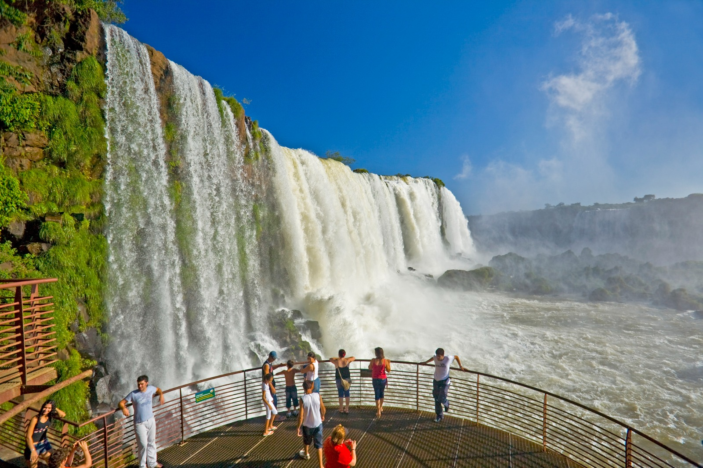
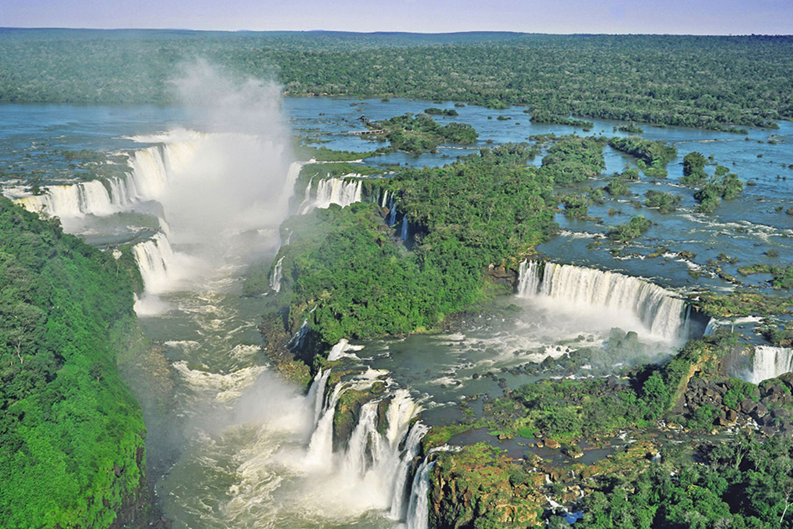

O Parque nacional do Iguaçu, criado em 1939, abriga o maior remanescente de floresta Atlântica da região sul do Brasil. O Parque protege uma riquíssima biodiversidade, constituída por espécies representativas da fauna e flora brasileiras. Essa expressiva variabilidade biológica somada à paisagem singular de rara beleza cênica das Cataratas do Iguaçu, fizeram do Parque Nacional do Iguaçu a primeira Unidade de Conservação do Brasil a ser instituída como Sítio do Patrimônio Mundial Natural pela UNESCO, no ano de 1986. Além disto, as Cataratas do Iguaçu são uma das Sete Novas Maravilhas da Natureza. O título foi conquistado em 11 de novembro de 2011, por meio de um concurso internacional promovido pela Fundação New Seven Wonders. A magnitude dos 275 saltos d’água contagiou o mundo e deu o título ao atrativo, localizado no Rio Iguaçu, fronteira de Brasil e Argentina. ESTRUTURA LOCAL: Com o objetivo de melhor atender os visitantes, o local conta com estrutura de estacionamento, lanchonetes, restaurante, guarda-volumes e lojas de souvenir.